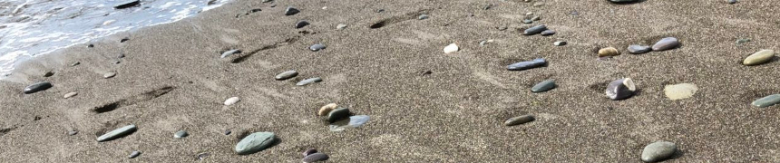
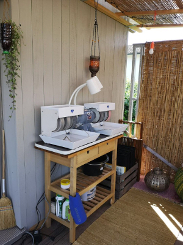

With stones, it's a kind of a story. Each stone needs to be found individually. I need to search for each one consciously. Each stone has its history and destination. A personal stone and its matching recipient needs to be found. Therefore it's difficult for me to make up a price for a stone. You cannot "own" or "sell" a stone. Therefore for the stones I am offering a trade or energy-exchange. If you want and can give me money, that's appreciated. You decide how much it is worth to you and you want to give.
If you want to offer me something different I am happy to negotiate with you. I am thinking of any kind of services, medical, technical, mechanical, organic food (plant based only) or spiritual
finding stones and grinding them with love and passion

After me or Sandra have found a stone, it will be manually grinded. We use a Diamond Pacific grinding machine.
This process can take several hours. I get into a meditative state and am building up an intense connection to the stone. I can feel its energy or soul. Each stone is as individual as any other being and each stone has a different purpose and mission. In difference to a gem or jewel, which represent a common energy and can be "programmed" according to their crystal structure, a gravel or boulder is individual. Their energy and mission needs to be discovered. When searching for a stone for a dedicated person, I am being spiritually guided. After the work with the stone I am writing down the spiritual message for the recipient.
The transformation process of Matty's stone
row stone are picture 1 and 2, then a picture after each level of granularity
The transformation process of Sara's stone